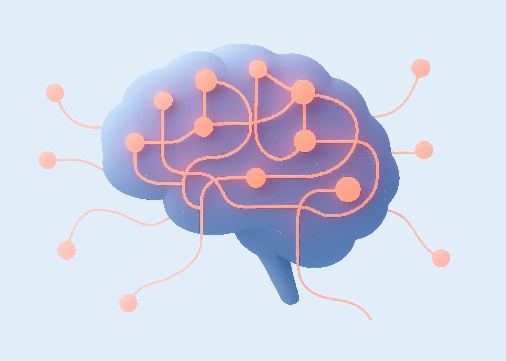
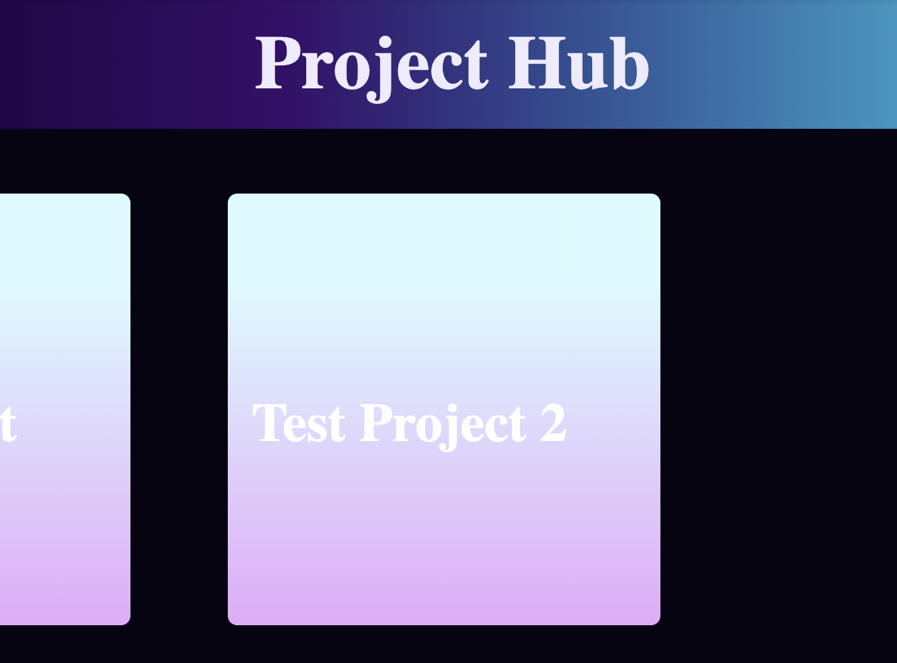
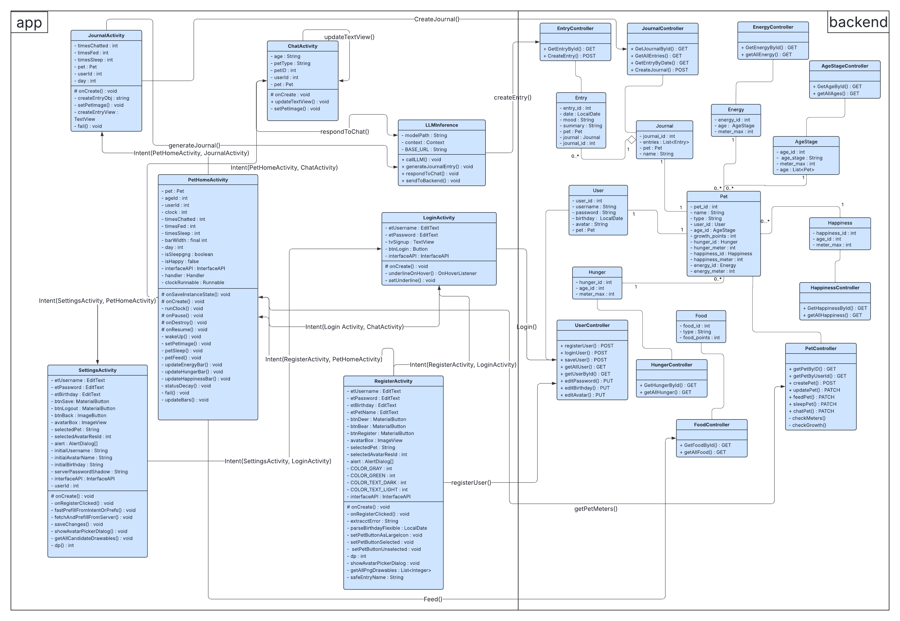
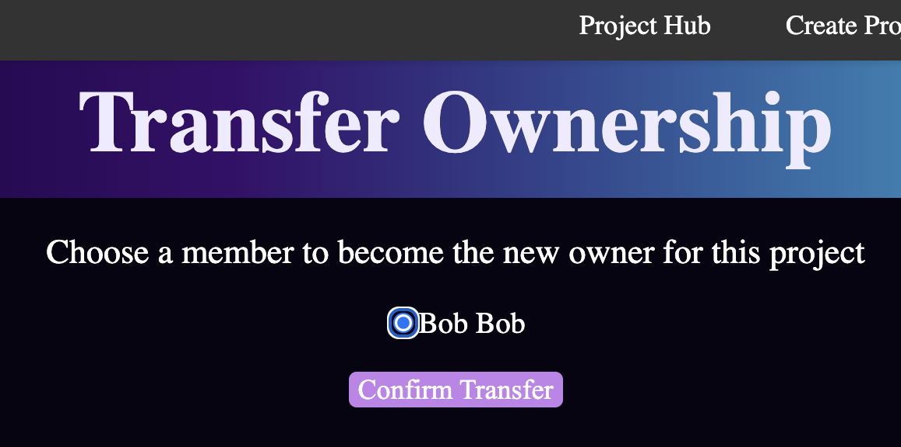

Dialogue-Based Country Prediction Using NLP and ML

PythonNLPML Models
Built several Python scripts to analyze dialogue datasets and predict country-level
cultural patterns using embedding-based features (OpenAI API) and machine learning models.
Tasky

SQLJavaScriptAPISpringBootGradleReact
A website where the user can manage their projects, tasks, and group members.
Includes several features such as adding group members through a share code,
adding/deleting tasks, transferring ownership of projects, and more.
Personalized website for organizing the games the user has played and
their reviews. Additional feature where user can search for games by
different categories.
An Android chat pet app where users can feed, play, chat, and make their pets
go to sleep.
Summary
This project was done at USC with a team of five group members. We were tasked with
building an Android chat pet app. The part that I was in charge with was most of the
backend, creating the database for the app, and creating all the API routes. I used
SpringBoot for the backend setup and coded in JavaScript for all of the backend code.
I used SQL to create the database.
Creating the Dataset
CREATE DATABASE IF NOT EXISTS dears;
USE dears;
CREATE TABLE Users(
user_id INT AUTO_INCREMENT PRIMARY KEY,
username VARCHAR(25) NOT NULL,
password VARCHAR(25) NOT NULL,
avatar VARCHAR(25) NOT NULL,
birthday DATE NOT NULL
);
CREATE TABLE PetType(
type_id INT AUTO_INCREMENT PRIMARY KEY,
type_name VARCHAR(25) NOT NULL
);
INSERT INTO PetType(type_name) VALUES
('Deer'),
('Bear');
CREATE TABLE Food(
food_id INT AUTO_INCREMENT PRIMARY KEY,
type VARCHAR(25) NOT NULL,
food_points INT NOT NULL
);
INSERT INTO Food(type, food_points) VALUES
('tree bark', 5),
('berries', 10),
('mushroom', 20),
('honey', 5),
('salmon', 20);
CREATE TABLE AgeStage(
age_id INT AUTO_INCREMENT PRIMARY KEY,
age_stage VARCHAR(25) NOT NULL,
meter_max INT NOT NULL
);
INSERT INTO AgeStage(age_stage, meter_max) VALUES
('baby', 10),
('teen', 20),
('adult', 40);
CREATE TABLE Pet(
pet_id INT AUTO_INCREMENT PRIMARY KEY,
user_id INT NOT NULL,
type VARCHAR(25) NOT NULL,
name VARCHAR(25) NOT NULL,
growth_points INT NOT NULL,
age_id INT NOT NULL,
FOREIGN KEY (user_id) REFERENCES Users(user_id),
FOREIGN KEY (age_id) REFERENCES AgeStage(age_id)
);
CREATE TABLE Happiness(
happiness_id INT AUTO_INCREMENT PRIMARY KEY,
age_id INT NOT NULL,
meter_max INT NOT NULL,
FOREIGN KEY (age_id) REFERENCES AgeStage(age_id)
);
INSERT INTO Happiness(meter_max, age_id) VALUES
(10, 1),
(20, 2),
(40, 3);
CREATE TABLE Energy(
energy_id INT AUTO_INCREMENT PRIMARY KEY,
age_id INT NOT NULL,
meter_max INT NOT NULL,
FOREIGN KEY (age_id) REFERENCES AgeStage(age_id)
);
INSERT INTO Energy(meter_max, age_id) VALUES
(10, 1),
(20, 2),
(40, 3);
CREATE TABLE Hunger(
hunger_id INT AUTO_INCREMENT PRIMARY KEY,
age_id INT NOT NULL,
meter_max INT NOT NULL,
FOREIGN KEY (age_id) REFERENCES AgeStage(age_id)
);
INSERT INTO Hunger(meter_max, age_id) VALUES
(10, 1),
(20, 2),
(40, 3);
CREATE TABLE Journal(
journal_id INT AUTO_INCREMENT PRIMARY KEY,
pet_id INT NOT NULL,
name VARCHAR(25) NOT NULL,
FOREIGN KEY (pet_id) REFERENCES Pet(pet_id)
);
CREATE TABLE Entry(
entry_id INT AUTO_INCREMENT PRIMARY KEY,
journal_id INT NOT NULL,
date DATE NOT NULL,
summary VARCHAR(150) NOT NULL,
mood VARCHAR(150) NOT NULL,
FOREIGN KEY (journal_id) REFERENCES Journal(journal_id)
);
CREATE TABLE ChatChoices(
chat_id INT AUTO_INCREMENT PRIMARY KEY,
choice VARCHAR(150) NOT NULL
);
INSERT INTO ChatChoices(choice) VALUE
('Hello'),
('How are you?'),
('Tell me a joke!');
CREATE TABLE History(
history_id INT AUTO_INCREMENT PRIMARY KEY,
chat_id INT NOT NULL,
history VARCHAR(255) NOT NULL,
FOREIGN KEY(chat_id) REFERENCES ChatChoices(chat_id)
);
The above shows the database I created using SQL. Most of the relationships were
one-to-one since for our project we made it so that there's one pet for each user.
UML Diagram for the App

The diagram above shows the UML diagram for our app. I was in charge of coding the primary
pet and user features which includes everything on the backend side except for Journal and
Chat related code. I also created all the API connections for every object.
Dialogue-Based Country Prediction Using NLP and ML
PythonNLPML Models
Built several Python scripts to analyze dialogue datasets and predict country-level
cultural patterns using embedding-based features (OpenAI API) and machine learning models.
Summary
This project was during my internship as an A.I. Researcher under Professor Jonathan Gratch
at University of Southern California. During this internship, I was given a large dataset of
buyers and sellers from different countries. Besides data about where the buyer/seller was from
and the dialog between them, there were other variables such as education levels, risk aversion score,
gender, and more.
Using Embedded Classification
# Compute confusion matrix
cf_matrix = confusion_matrix(y_true, y_pred, labels=labels)
# Create flattened counts and percentages
group_counts = ["{0:0.0f}".format(value) for value in cf_matrix.flatten()]
group_percentages = ["{0:.1%}".format(value) for value in cf_matrix.flatten()/np.sum(cf_matrix)]
group_labels = [f"{v1}\n{v2}" for v1, v2 in zip(group_counts, group_percentages)]
group_labels = np.asarray(group_labels).reshape(len(labels), len(labels))
# Plot heatmap
plt.figure(figsize=(8, 6))
sns.heatmap(cf_matrix, annot=group_labels, fmt='', cmap='Blues', xticklabels=labels, yticklabels=labels)
plt.ylabel("True")
plt.xlabel("Predicted")
plt.title("Confusion Matrix")
plt.show()
One of my first tasks was to pull 80 pairs of buyers and sellers who were from the same
country. Then I would do embedded classification on them using the OpenAI API. I would
share these results by creating a confusion matrix to show my professor. Additionally,
from those results, I also had to do an analysis on why the AI made mistakes on some of
the predictions and form a pattern.
During the first phase of my research, I refined my code to do both logistic and linear
regression to analyze the predicted results with different variables (buyer/seller education
levels, risk aversion score, etc.). For the logistic regression analyses, I would use confusion
matrices to show the results and for the linear regression analyses I would use plot graphs.
Testing with Other Models
During the second phase of my research, I made the same analyses using different models. I created
Python scripts using SVM and Random Forest models that tested the same predictions as before. With
these results, my professor was able to compare how each of the models performed.
Tasky
SQLJavaScriptAPISpringBootGradleReact
A website where the user can manage their projects, tasks, and group members.
Includes several features such as adding group members through a share code,
adding/deleting tasks, transferring ownership of projects, and more.
Summary
This project was done at USC with a team of nine group members. We were tasked with
building a website of our choice. As a team member, I played the role of a team leader
by leading the group efficiently to ensure that we made submissions on time. I was the
bridge of communication between the frontend and backend teams. Additionally, as the
creator of the database and a member of the backend team, I was the main source to answers
to questions about the relationships between different variables and how to connect with the backend.
The part that I was in charge of was creating the database for the website and the
backend code for the user. I also took charge in creating some of the API routes
and some of the frontend logic (i.e. transferring ownership of projects, adjusting API
connections, etc.). I also helped fix various backend issues within the backend team.
Creating the Database
The above diagram shows the database I designed for this project. Since each user could be
a member of or own various projects and be in charge of several tasks, we had many one-to-many
and many-to-many relationships.
Backend for the User
@JsonIgnore
@OneToMany(mappedBy = "user", cascade = CascadeType.ALL)
private List availability = new ArrayList<>();
@JsonIgnore
@OneToMany(mappedBy = "user", cascade = CascadeType.ALL)
private List memberships = new ArrayList<>();
public User(int userID, String username, String email, boolean isGuest) {
this.userID = userID;
this.username = username;
this.email = email;
this.isGuest = isGuest;
}
The above code shows the part of the User model where I created the
relationships for the user.
Transferring Ownership

Transferring ownership of a project was one of the many important features that
were implemented for this project. For this part, I took charge within the
frontend team. This gave me the opportunity to learn React which I was not familiar
with at first but quickly got the grasp of.